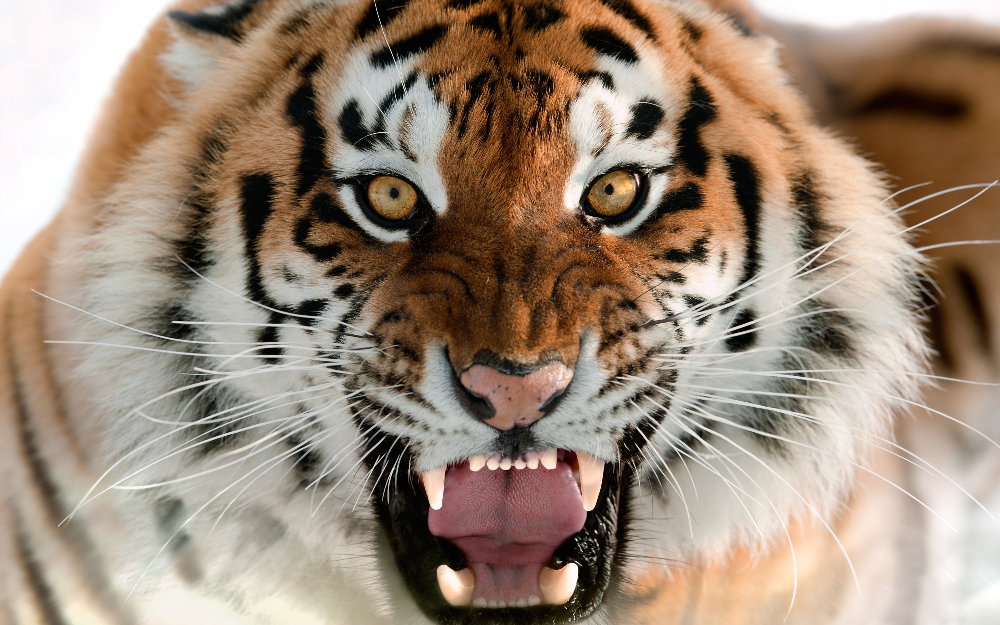
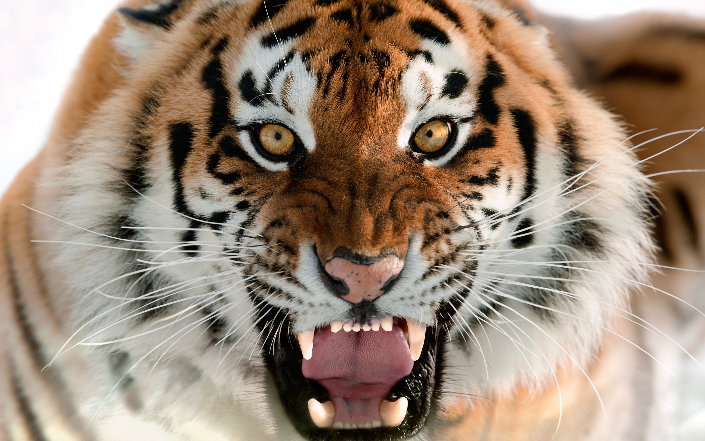
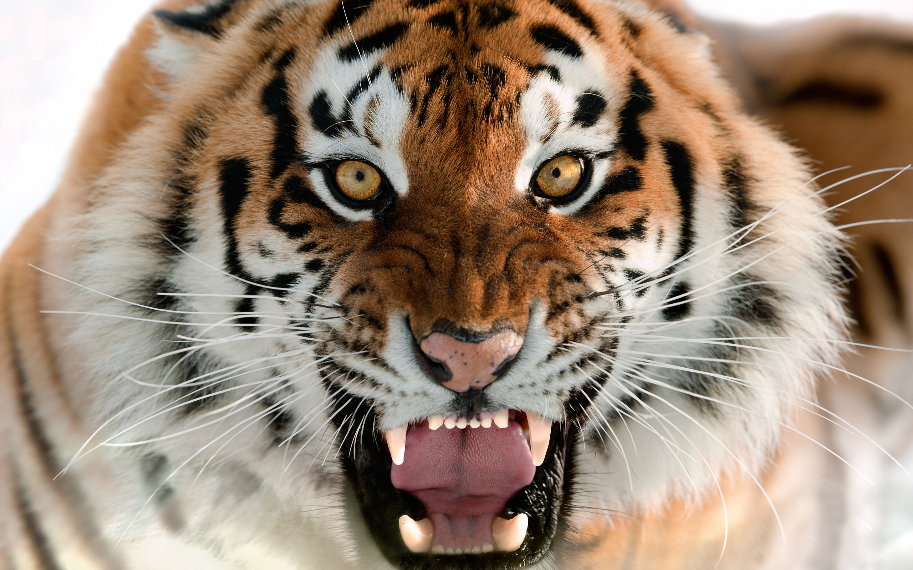

Strong, powerful and one of nature’s most feared predators!

Tigers are the largest amongst other wild cats.
There are five subspecies of tiger: Bengal tiger, South China tiger, Indochinese tiger, Sumatran tiger and Amur tiger.
The national animal of Bangladesh is the Royal Bengal Tiger.
They can weigh up to 363kg (that’s about the same as ten ten year olds!) and measure up to 3.3m!
At full speed, tigers can reach up to 65km/h.
They mainly feed on large mammals such as deer, wild pigs, antelope and buffalo. Tigers love to swim and play in the water.
No two tigers have the same stripes, they are all unique!
The life expectancy of Tigers is between 20-25 years whether they are kept in captivity or in the wild.
Fun Facts
Tigers have antiseptic saliva.
A punch from a Tiger may kill you.
They can imitate the call of other animals.
A tiger’s roar can be heard as far as three kilometres away.
Tiger cubs are born blind and only half of the cubs survive.
 
